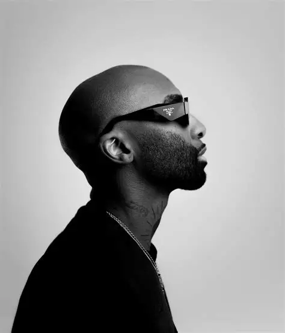

1987 - 2022
Rikhado Makhado, known professionally as Ricky Rick, was a South African hip-hop artist, songwriter, and fashion icon. He was one of the most influential figures in South African music, known for his unique style, catchy beats, and powerful lyrics that resonated with millions.
Born in KwaMashu, Durban, Ricky Rick rose to fame with his hit single "Boss Zonke" and became a household name across South Africa. He was not just a musician but a cultural movement, inspiring a generation of young South Africans to chase their dreams.
His untimely passing in February 2022 shocked the nation, but his music and legacy continue to live on. He remains my favorite artist because his music spoke to the soul and his style was unmatched.
Ricky Rick had a fashion sense like no other. His signature bucket hats, colorful outfits, and confident swag made him a true style icon. He taught me to be myself and express my individuality.
His songs like "Boss Zonke", "Amademoni", and "Sondela" spoke about real life struggles and victories. Every track felt personal and connected with listeners on a deep level.
He started from nothing and built an empire. From music to fashion to business, Ricky Rick showed that hard work and belief in yourself can take you anywhere.
He inspired millions of young South Africans to pursue their dreams. His message was clear: no matter where you come from, you can make it.
The anthem that started it all. This song made me a fan instantly.
A powerful track about fighting personal demons and staying strong.
A beautiful collaboration that showed his versatility as an artist.
An inspirational song about never giving up on your dreams.
"Umlando Uyaziphinda - History repeats itself, but greatness lives forever."
"I'm not just an artist, I'm a movement. I'm here to inspire the youth."
"Your past doesn't define your future. Keep pushing, keep grinding."
"Be yourself, because everyone else is already taken."